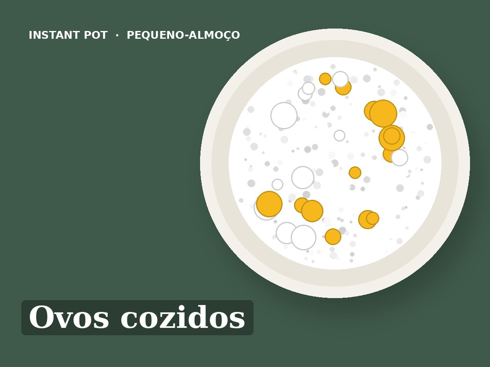

Ovos cozidos
Idioma: português de Portugal (pt-PT). Esta receita está escrita em português de Portugal. Ao importar, manter o título, os ingredientes e todos os passos em português, sem traduzir para inglês. Usar unidades métricas (g, ml, °C).
Ingredientes
- 6 a 8 ovos
- 250 ml de água
Preparação
- Pôr a água na panela e os ovos no suporte de vapor (trivet).
- Pressão (Pressure Cook): Pressão alta, 5 minutos.
- Libertação natural 5 minutos.
- Passar 5 minutos para água fria. Duram 5 a 7 dias no frigorífico com casca.